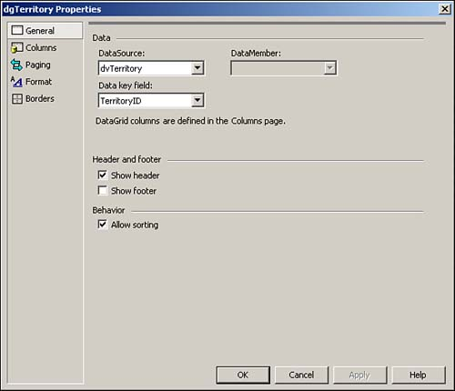
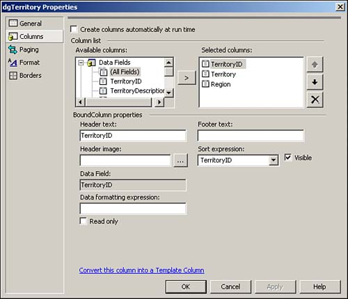
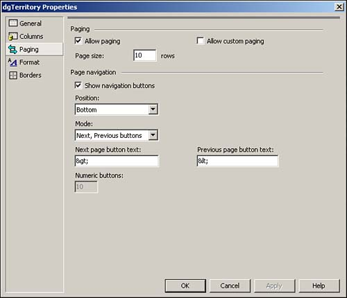

Create a Web Form. Then place the controls in Table 5.9 and Figure 5.8 with the following properties set.
Table 5.9. Property Settings for the Controls Used in This How-To
Object
Property
Setting
OleDbDataAdapter
ID
odaTerritory
SelectCommand
SELECT Territories.TerritoryID, Territories.TerritoryDescription, Region.RegionDescription, Region.RegionID FROM Territories INNER JOIN Region ON Territories.RegionID = Region.RegionID
DataSet
ID
dsTerritory
DataView
ID
dvTerritory
Table
dsTerritory.Territories
DataGrid
ID
dgTerritory
HyperLink
ID
hplReturnToMain
NavigateURL
wfrmMain.aspx
Right-click on the DataGrid control and choose Property Builder. You will then see the General tab of the DataGrid Property Builder. Set the properties as displayed in Figure 5.9.
Figure 5.9. Setting the General properties of the DataGrid control.

Click on the Columns tab. You can now add the columns TerritoryID, TerritoryDescription, and RegionDescription by clicking on the field in the available columns and then clicking the Add button for each one. You can then set the Header text for each to be TerritoryID, Territory, and Region respectively, by clicking on the column in the Selected Column list and changing the Header text property. When you are finished and you have the Region highlighted, it should look like Figure 5.10.
Figure 5.10. Setting the columns for the DataGrid control is easy at design time.

Note

Be sure to uncheck the Create Columns Automatically at Run Time check box; otherwise, the columns will end up showing up twice-once from you specifying them here at design time, and once when the code generates them.
Click on the Paging tab. Click on the Allow Paging check box, and type 10 for the Page Size (see Figure 5.11.) You can then close the Property Builder dialog box by clicking OK.
Figure 5.11. Setting the Paging properties at design time for the DataGrid control.

Create the BindTheGrid routine in Listing 5.19. Note that you are now binding to the DataView, rather than to a dataset.
Listing 5.19 wfrmHowTo5_6.aspx.vb: Binding the Data Grid to the DataView Control
Sub BindTheGrid() odaTerritory.Fill(dsTerritory) dgTerritory.DataSource = dvTerritory dgTerritory.DataBind() End SubAdd the code in Listing 5.20 to the Load event of the page.
Listing 5.20 wfrmHowTo5_6.aspx.vb: Loading the Page
Private Sub Page_Load(ByVal sender As System.Object, _ ByVal e As System.EventArgs) Handles MyBase.Load 'Put user code to initialize the page here If Not Me.IsPostBack Then BindTheGrid() End If End SubAdd the code in Listing 5.21 to the PageIndexChanged event of dgTerritory. This routine takes the NewPageIndex and assigns it to the data grid's CurrentPageIndex. Next, if MySort exists in the ViewState object, it is assigned to the DataView control. MySort is stored in the next step.
Listing 5.21 wfrmHowTo5_6.aspx.vb: Paging the Data Grid
Private Sub dgTerritory_PageIndexChanged(ByVal source As Object, ByVal e As System.Web.UI.WebControls.DataGridPageChangedEventArgs) Handles dgTerritory.PageIndexChanged '-- Set the current page in the data grid Me.dgTerritory.CurrentPageIndex = e.NewPageIndex If Not (ViewState("MySort") = Nothing) Then dvTerritory.Sort = ViewState("MySort") End If BindTheGrid() End SubAdd the code in Listing 5.22 to the SortCommand event of dgTerritory. When a column heading is clicked and sorting is turned on, this event is raised. This routine assigns the SortExpression to the Sort property of the dgTerritory. The SortExpression property is then stored in the ViewState object for round trips to the server, and then it is used in the code listed in step 6.
Listing 5.22 wfrmHowTo5_6.aspx.vb: Sorting the Data Grid
Private Sub dgTerritory_SortCommand(ByVal source As Object, ByVal e As System.Web.UI.WebControls.DataGridSortCommandEventArgs) Handles dgTerritory.SortCommand dvTerritory.Sort = e.SortExpression.ToString ViewState("MySort") = e.SortExpression.ToString BindTheGrid() End Sub